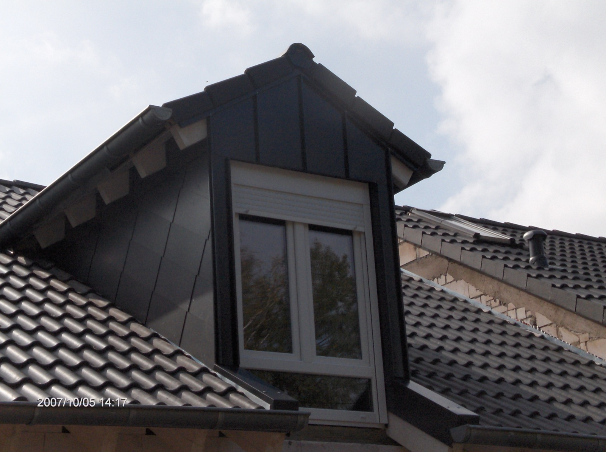
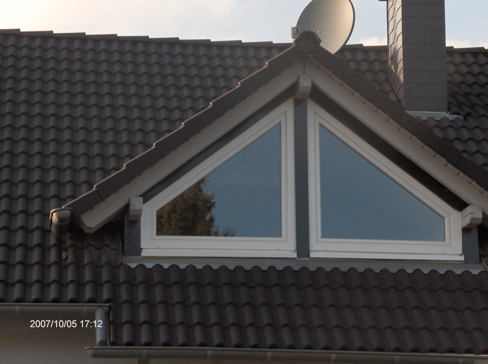
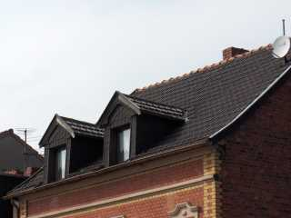
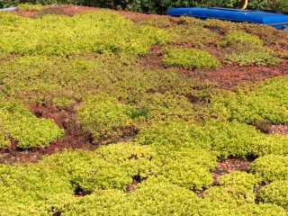
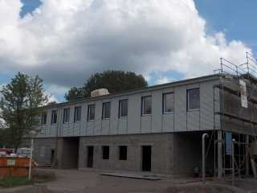
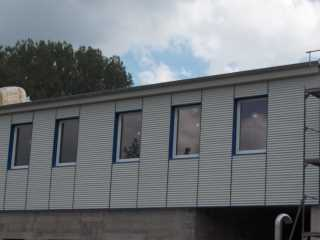
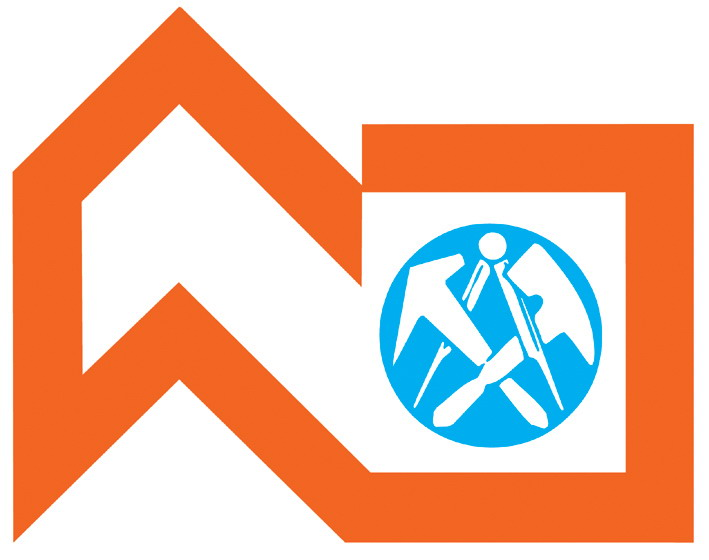

Meisterhaft · Innungsbetrieb
Ihr Dachdecker-Innungsbetrieb in Saarbrücken-Altenkessel.
Steildach, Flachdach, Abdichtung, Klempner- und Zimmererarbeiten, Fassade, Dachbegrünung und Photovoltaik – aus einer Hand, vom Betrieb an der Provinzialstraße 48.
- 3 Sterne Meisterhaft-Siegel der Deutschen Bauwirtschaft
- 2 Verbände Innung des Dachdeckerhandwerks Saarland und AGV Bau Saar
- 25 Jahre Berufserfahrung von Inhaber Günter Stephany
- Rückruf Büro Mo–Fr 07:30–14:00 Uhr, sonst Anrufbeantworter – wir melden uns umgehend
01 — Leistungen
Alles rund ums Dach. Und ein Stück darüber hinaus.
Vom neuen Steildach bis zur Photovoltaik-Anlage: Stephany Dach-Bau deckt das komplette Spektrum des Dachdecker- und Bauklempnerhandwerks ab – und arbeitet dabei auch für viele öffentliche Auftraggeber.
-
Steildach
Eindeckung und Sanierung geneigter Dächer mit Ziegel, Betondachstein oder Schiefer – inklusive Gauben.
-
Flachdach
Neubau und Sanierung von Flachdächern einschließlich der zugehörigen Abdichtung.
-
Abdichtungen aller Art
Abdichtungsarbeiten an Dach und Bauwerk – von der Attika bis zum Anschluss.
-
Reparaturarbeiten
Dachreparaturen vom kleinen Schaden bis zur Teilsanierung, Dachrinnen und Sturmschäden eingeschlossen.
-
Zimmererarbeiten
Holzbauarbeiten am Dach: Dachstuhl, Gauben und Dachausbau – passgenau zum neuen Dach.
-
Klempnerarbeiten
Bauklempnerei: Rinnen, Fallrohre, Verwahrungen und Metallverkleidungen am Dach.
-
Fassadenbau
Fassadenverkleidungen, unter anderem mit Metall – wie beim eigenen Referenzprojekt mit Blechfassade.
-
Dachbegrünung
Extensive Dachbegrünung auf Flachdächern – leicht, pflegearm und gut für das Mikroklima.
-
Photovoltaik & Solarsysteme
Montage von Photovoltaik-Anlagen und Solarsystemen auf dem Dach – abgestimmt auf die vorhandene Eindeckung, mit Blick auf Dichtheit und Statik.
02 — Referenzen
Gauben, Schiefer, Blech und Grün.
Eigene Projekte aus Saarbrücken – von der verschieferten Gaube bis zur Metallfassade am Gewerbe-Neubau.





Einsatzgebiet
Saarbrücken-Altenkessel und die Stadt Saarbrücken.
Unser Betrieb sitzt an der Provinzialstraße 48. Zu unserem Kundenstamm gehören viele öffentliche Auftraggeber. Ob Ihr Vorhaben in unser Einsatzgebiet fällt, klären wir am schnellsten am Telefon.
03 — Über uns
Ein Betrieb mit Vorgeschichte. Und einem eingespielten Team.
Stephany Dach-Bau arbeitet an der alten Wirkungsstätte der Dachdeckerei Henschel in Saarbrücken-Altenkessel. Nach dem Ruhestand von Herrn Henschel gründete Günter Stephany hier seinen eigenen Betrieb – und übernahm dessen Mitarbeiter. Das Team wurde seither vergrößert, neue Arbeitsplätze sind entstanden.
Günter Stephany bringt 25 Jahre Berufserfahrung mit. Der Betrieb ist Mitglied der Innung des Dachdeckerhandwerks für das Saarland sowie im Arbeitgeberverband der Bauwirtschaft des Saarlandes (AGV Bau Saar) und in der Landesfachgruppe Hochbau. Der Betrieb arbeitet unter dem Meisterhaft-Siegel der Deutschen Bauwirtschaft mit drei Sternen. Im Verzeichnis des AGV Bau Saar ist Stephany Dach Bau als Maurer- und Dachdeckerbetrieb geführt.

04 — Kontakt
Rufen Sie an – wir rufen zurück.
Das Büro ist Montag bis Freitag von 07:30 bis 14:00 Uhr besetzt. Sollte es ausnahmsweise nicht besetzt sein, nimmt der Anrufbeantworter Ihre Nachricht entgegen – wir melden uns umgehend.
Adresse
Stephany Dach-BauFirma Günter Stephany
Provinzialstr. 48
66126 Saarbrücken-Altenkessel Route planen
Bürozeiten
- Montag – Freitag
- 07:30 – 14:00 Uhr
Ist das Büro ausnahmsweise nicht besetzt: Anrufbeantworter – wir melden uns umgehend bei Ihnen.
Direkt erreichen
- Telefon
- 06898 82466
- Fax
- 06898 851404